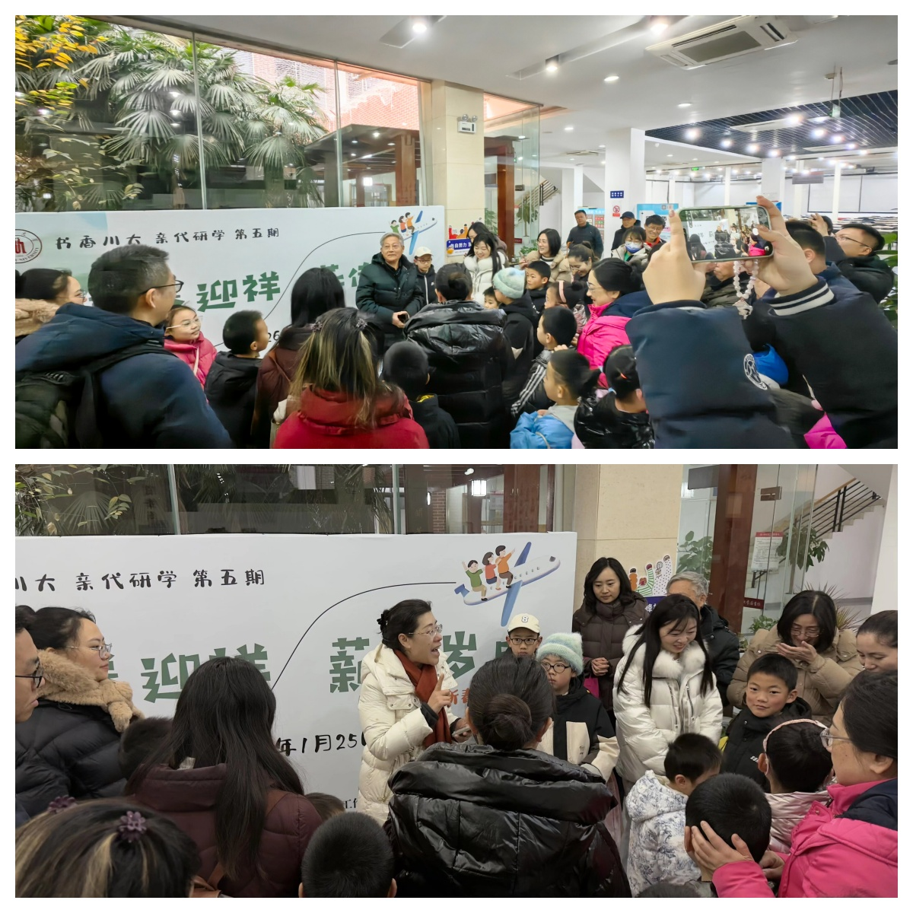

学院通知 · 校园活动
开卷迎祥 薪传岁时 —— 四川大学第五期“书香川大·亲代研学”新春专场活动成功举办
发布时间：2026-01-28 00:00:00
2026年1月25日，为进一步给学校广大教职工提供暖心、贴心的服务，涵育校园书香文化，学校党委教师工作部、校工会、离退休工作处（关心下一代工作委员会办公室）、图书馆联合主办“开卷迎祥 薪传岁时”—— 四川大学第五期“书香川大•亲代研学”专场活动，吸引了50余组教职工家庭参加。 活动伊始，四川大学关心下一代工作委员会社区教育活动指导部部长胡府斌和图书馆党委副书记兼纪委书记、副馆长杜小军致辞，欢迎教职工和子女们（孙子女们）参加本次研学活动。 结合不同年龄段儿童的认知规律与兴趣特点，活动精心设置两大主题专场，实现知识性与趣味性的深度融合。小龄专场（4-8岁）以绘本阅读为切入点，图书馆邹艳老师带领孩子们走进《冬眠旅馆》的童话世界，通过沉浸式讲述与互动激发想象力和阅读兴趣；随后的立体拼图拼插环节，家长与孩子默契配合、动手协作，在欢声笑语中锻炼空间思维与实践能力，定格亲子温馨瞬间。 大龄专场（9-12岁）聚焦科技启蒙与工程思维培养。在图书馆卢语琦老师的指导下，孩子们开启AI动画视频创作之旅，初步接触人工智能应用知识；滚珠过山车模型搭建环节，让孩子们在动手实践中探索物理原理与工程逻辑，提升解决问题的能力。 活动尾声，主办方为每位参加研学活动的孩子颁发定制研学证书与图书，以荣誉肯定研学成果，以书籍传递阅读期许。不少教职工家长表示，活动既丰富了孩子的假期生活，又搭建了高质量亲子互动桥梁，是学校人文关怀的生动体现。 “书香川大·亲代研学”活动始终坚守“以文化人、以书育人”的初心，从首期到第五期，依托图书馆专业文化空间与服务力量，不断优化“阅读+实践+亲子”特色育人模式。未来，该活动将继续深耕教职工家庭需求，传递川大人文温度，为培育优良家风、构建和谐校园注入持久文化力量，让书香薪火在校园与家庭间代代相传。 文：文献服务中心 陈玉容 樊伟 图：文献服务中心 淳姣 张若然
